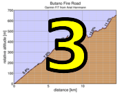

|
 |
 |
|
|
|
| Results are closed! |
| The route has been updated for week 3: see RideWithGPS for the corrected version (Butano gate-to-gate) |
| results? | right here! |
| profile |  |
| distance | 9.07 miles (14.6 km) |
| climbing | 2493 ft (759 meters) |
| grade | 5.21% |
| stats | climb 1: 5.94 mi, 1514 ft climb 2: 3.20 mi, 788 ft climb 3: 6.60 mi, 2060 ft total: 18.4 miles, 4399 ft |
| where? | see below |
| when? | 15 Oct 2016 |
| what time | no registration needed climb starts @ 10 am, or any time Saturday |
| Result | Results are closed |
| how? |  |
| how much? | free! |
| why? | Ask not why; just do! |
| coordinator |  |
| volunteers | sign up! |
| weather | Bay area winds |
| links | Butano brochure w/ map Big Basin brochure w/ map precise start coordinate precise finish coordinate |
| deja-vu? | New! |
| route map (look here!) | |
Sorry, folks! Our insurance requires all riders wear helmets during the climb, and we follow the USA Cycling rule against ear buds or other head phones. Rock to tunes before the climb, perhaps, but we need riders to pay attention to what's happening during the climb...
It's self-ride this week.
Since there will be riders climbing today, the best approach probably is not to descent the fire trail after the climb. If you're on a mountain or cross bike and drove to near the start, we recommend an alternate route back to the trail head. You'll finish at the intersection of Butano Fire Road and Johansen Road (see the trail map). From there you can descend Johansen to Gazos Creek Road, which is dirt becoming paved for one mile before it intersects with the end of Cloverdale Road.
If you do want to drive to close to the base of Butano, then you can park in Pescadero, and enjoy the food options there after the climb (Harley Goat Farm, hint-hint).
Another option is to continue on Butano to where it lets out into the upper part of China Grade. Descend China Grade to where it crosses 236 (in Big Basin), then ride north from there to Hwy 9, and climb that to Skyline Boulevard.
This would mean means if you're going to drive, you can park near the top of Highway 84 or Alpine Road, then descend westward by bike. Alpine drops you off on Pescadero Road where you can turn right to reach Highway 84: turn left and ride that to San Gregorio. If you descend Highway 84 just stay on that all the way to San Gregorio.This is a self-timed week, so we won't have check-in and results. However, there's still volunteer options! You can volunteer to help using our volunteer form! Thanks!!!
Low-Key is all about a group of friends riding up a hill together. It's like any other informal group ride, except we time you to the top and report the results on our web site. But we have no road closures, no lead vehicle, no follow vehicle. We are traffic, sharing the roads with other traffic, following the laws and courtesy which applies to traffic. This includes riding to the right of the road when practicable, and not crossing double yellows to pass riders or to get through corners faster. We're each responsible for our own actions out there, on and off the bike, both as users of the road as as courteous visitors to the neighborhoods we pass through. "Ceci n'est pas un race".